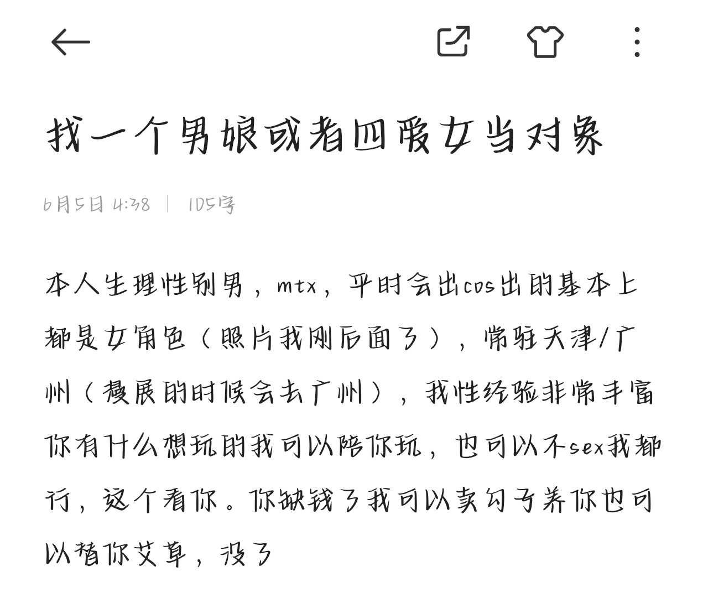

困困鱼崽仔小云
@kunkunyuzaizai
@jingye111 你这标签怎么回事

精液
@jingye111
求求你了和我谈恋爱吧😭😭，我太压抑了，男的女的都行，你缺钱了我可以卖勾子给你爆金币，我太需要爱了谁来爱我一下😭😭😭#男娘 #四爱 #s #m #4i
#百合 #里百合 #伪百合 #女同 #男同 #gay #le #厌男 #厌女 #抑郁症 #双向情感障碍 #焦虑 #哪吒之魔童闹海 #原神 #精神分裂 #多重人格 #AveMujica #mygo https://t.co/aJMlMhVnQC